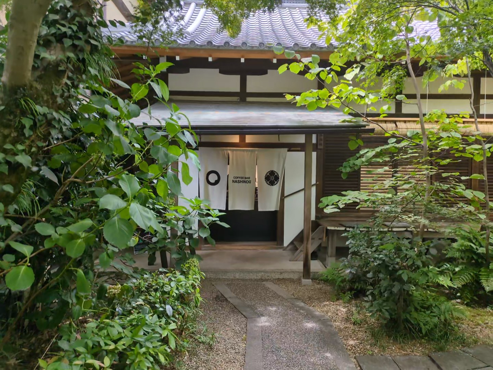
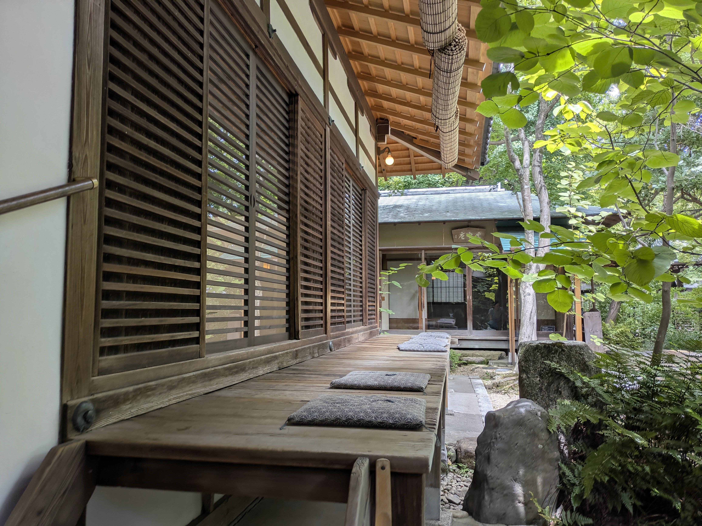
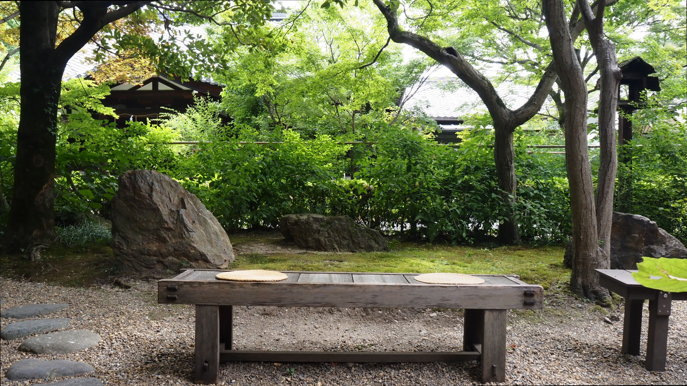
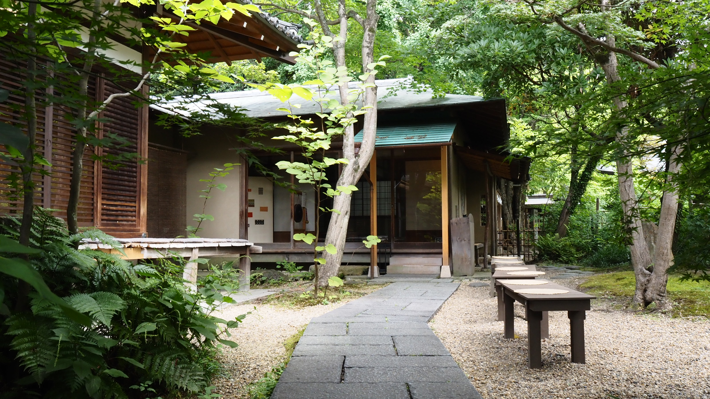

C
FFEE BASE
×
NASHIN

KI
京の歴史と名水が、心を潤す。
CONCEPT
追われ続ける日常から、少しだけ離れてみませんか。
「Coffee Base NASHINOKI」があるのは、京都御所の東端に佇む梨木神社。
都会の喧騒を忘れさせる静寂のなかで、あなた自身を取り戻すための隠れ家です。
名水と建築の背景
FAMOUS WATER & ARCHITECTURE

京都三名水「染井の水」と旧春興殿
唯一現存する名水「染井の水」のまろやかな口あたりと、大正期に宮中より移築された歴史的建築「旧春興殿」の温もり。その深い背景を紐解きます。
境内の静けさに身を委ねて
SPACE & ATMOSPHERE
いつでもここでは、あなたを急かすものはありません。木漏れ日の差す縁側や、風に揺れる境内の緑とともに、ただ心地よい時間をお過ごしください。




あなたをいたわる、贅沢な時間。
COFFEE COURSE
北山杉を贅沢に使用した静謐な特別室にて、完全予約制の「コーヒーコース」をご用意しております。 レストランのコース料理のように60分〜90分かけて、複数のコーヒーを順番にご提供。一種類の豆が抽出方法でどう表情を変えるか、京都の老舗和菓子とともに五感を澄まして味わっていただけます。
アクセス・店舗情報
ACCESS & INFO
京都御所のすぐ東側、静かな鳥居をくぐり、まっすぐな参道を進んだ左手にございます。少し疲れたときは、いつでもお気軽にお立ち寄りください。
NASHINOKI
- 営業時間
- 10:00〜17:00
- 住 所
- 京都府京都市上京区染殿町680 梨木神社境内
- 電 話
- 075-600-9393